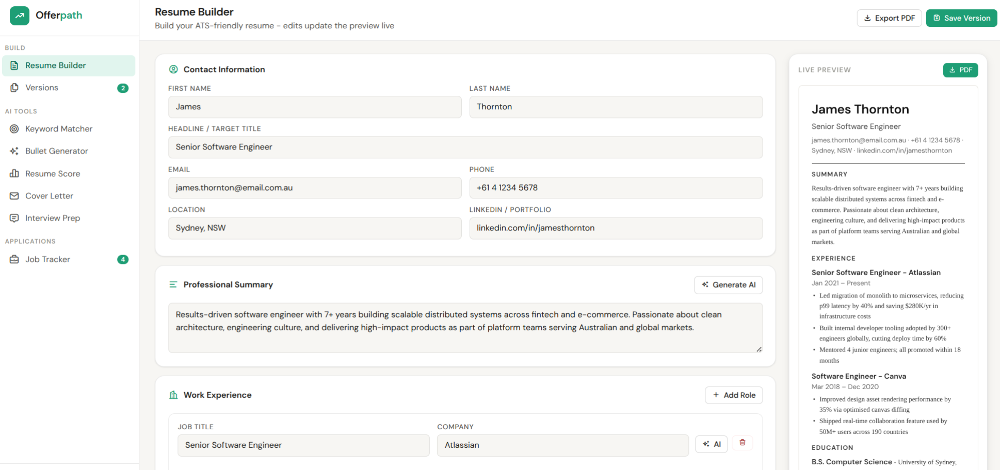
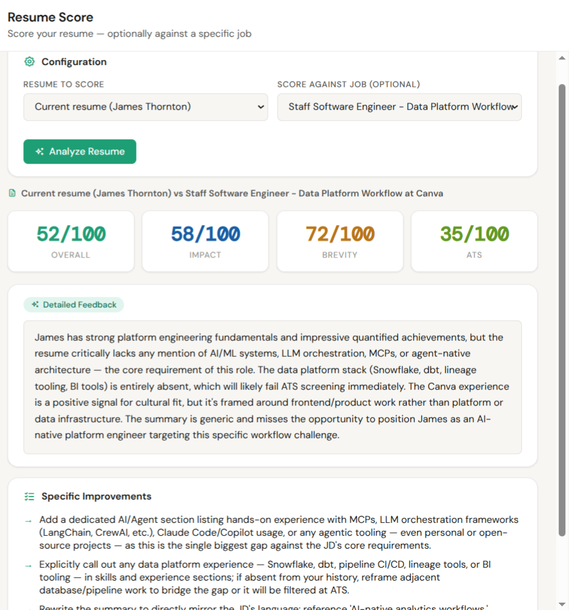

Offerpath -
judgment is what
I was really building
I didn't build this to have a side project. I built it to develop the kind of engineering judgment you can only get by shipping something real - end-to-end, in production, with real users, real infrastructure decisions, and real consequences when things break.
The product is a resume builder powered by Claude. The real subject is every decision beneath it: what to build first, what to fix properly, what to leave for later, how to structure code so whole classes of bugs become impossible to express, and when a test suite is covering the right thing versus just passing.
Interested in a live walkthrough? Reach out and I'll share access directly.
The choices that shaped the system
Every decision below had a tradeoff. I've tried to be specific about what each one cost and what it bought.
What it looks like in use
Eight features. All persisted per user. All running in production.




Six distinct AI workflows
Claude is called from a secure, rate-limited backend proxy. The API key never touches the browser. User content is boundary-separated from instructions in every prompt to guard against injection.
How the system is structured
Tools and platforms
92 tests - and what they actually assert
The count is less interesting than what the tests cover. After a persistence bug shipped undetected, the suite was retrofitted to assert that API calls are actually made - not just that local state updates. A test that checks the UI changed but not whether the change reached the backend is a false sense of confidence.
What this project taught me about leading AI product development
"The engineering work on this project was not the hard part. The hard part was judgment - when to prototype vs architect, when to fix vs ship, when the simple platform choice is the right call and when it will create problems later. These are the decisions that determine whether an engineering team builds the right thing well or the wrong thing fast."
"AI integration changes the product development loop in a specific way: the bottleneck shifts from writing code to knowing what to build, how to structure prompts, how to handle streaming and structured output reliably, and how to test AI-dependent behaviour without making tests brittle or expensive. None of that is obvious until you have done it."
"The persistence bug is the example I keep returning to. The immediate fix was one line. The right fix was a service layer, retrofitted tests, and a documented rationale - three things that take longer and produce no new features. That is the call a Head of Engineering makes every day: fix the instance or prevent the class. The answer depends on how much the class costs you, and you only develop that intuition by shipping things and living with the consequences."